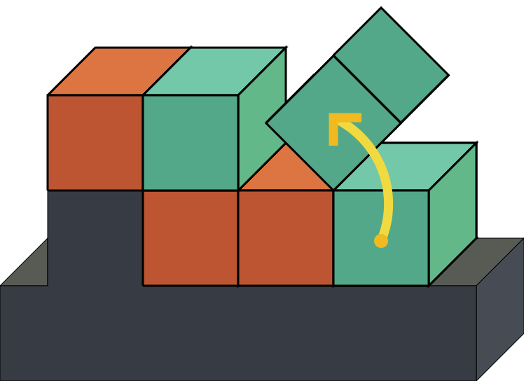

M-Block are magnetically-bonded, angular momentum-actuated modular robots. They are 50 mm cubes are autonomous robots that have no external actuated moving parts, and no tethers. The modules are capable of pivoting about their edges using inertial force actuation. A flywheel located inside the module, (oriented in the plane of the intended motion), is used to store angular momentum before a braking mechanism is used to decelerate the flywheel and, during a short duration, exert a high torque on the module. If this torque is sufficiently high, the module breaks its magnetic bonds with its neighbors and pivots into a new location.
• The actuation is provided by a flywheel inside the cube that can reach up to 20000 revolutions per minute
• On each face there are 8 magnets to snap cubes into place.
• On each edge there are 2 magnets that are free to spin along the axis of the edge that provide a pivoting line for the angular momentum / torque.